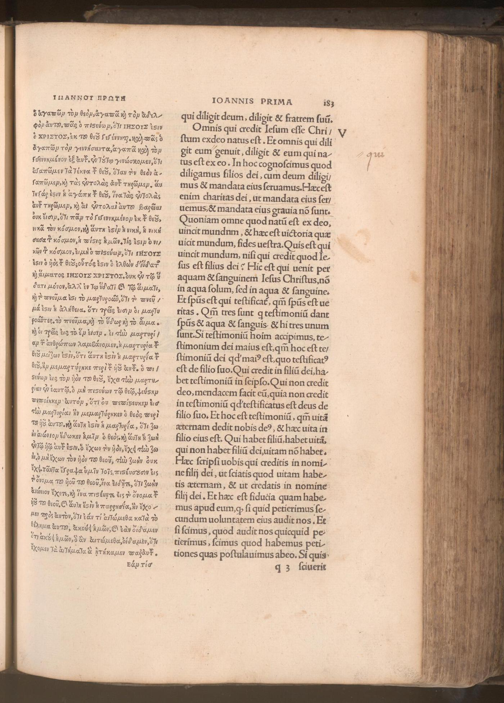

The print room
From manuscript
to printed Bible.
The press repeats the page.
People decide what goes on it.
Start with one surviving sheet. Separate the work of an editor, a translator and a printer—then follow the choices behind later editions.
Examine the 1516 page ↓01 / A book contains several kinds of work
One page. Three different jobs.
Erasmus / Johann Froben
Select a layer to examine
Two columns are not two independent ancient witnesses.
Both belong to Erasmus’s editorial undertaking.
Public Domain Mark · collection record ↗
Evidence trail
02 / The text keeps changing
The same project.
A different decision.
At 1 John 5:7–8, the heavenly witnesses clause—the Comma Johanneum—is absent from Erasmus’s first two Greek editions and present in the third.
The first page has been inspected here. The later states follow H. J. de Jonge’s research; they are not simulated facsimiles.
Abbreviated content guide · not a quotation
1516 · supported by the page above and de Jonge.
03 / Trace an edition
A series continues.
Its base can change.
Follow the Hebrew reference text separately from the editorial series. Select a printed edition to see both relationships.
Selected edition
BHQ
Ancient versions and additional Hebrew witnesses inform the apparatus. They are not all drawn. There is no copying line from Ben Hayyim to the Leningrad Codex.